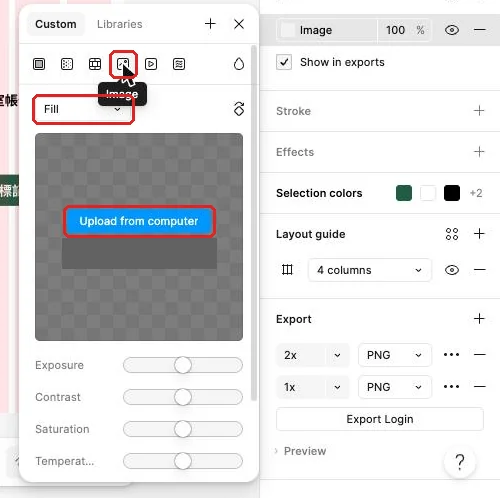

把任務做成會增高、可增刪的清單
工作室任務有長有短，清單要能用元件快速增減，也要在載入中與沒有任務時說清楚現在的狀態。
從會長高的表單，接到會變動的任務資料
工作室每天收到的任務數量不同，標題長度也不同。若每一列都靠手動定位，長標題會撞到期限，新增資料又得把後面所有列往下搬；當最後一筆被移除時，整張畫面還可能只剩一片空白。這堂要把任務內容做成可重複使用的 Row / Task（任務列）元件，再用 List（清單容器）管理多筆資料。
這項工作會接著使用上次在表單裡練過的 Auto height（自動增高）、Hug contents（貼合內容）與 Fill container（填滿容器）。先開本堂起始材料，了解任務資料與要保留的畫面；完成清單、空狀態、載入中畫面與詳情後，再用完成檢查表逐項核對。沒有上次成果時，先回到完成表單與錯誤修正依規格表補做，約需二十到三十分鐘。主線資料來自任務資料，所有畫面仍放在同一個 Figma 檔案的同一頁。
先在畫布空白處規劃一個新的清單區，保留已完成的登入表單。這樣能保留「登入」與「待處理清單」兩個工作階段，後面做原型時再把它們串起來。按鈕元件也繼續沿用，詳情畫面會插入「標記完成」作為主要動作。
清單由可重複的列與外層排列組成
這一節要看懂 Row、元件屬性與 List 各自解決什麼問題。每一個 Row 包住同一筆任務的標題、期限狀態、標籤與前往詳情的線索；Title 與 Due 文字屬性讓每個使用處呈現自己的資料，Status 屬性則切換待處理與完成；外層 List 再包住多個使用處，負責列與列之間的間距。
例如，「整理交付包」只佔一行；標籤換行時，所屬 Row 會自然增高，下一列由外層 List 往下排。兩筆任務都使用相同元件與內距，這比為每一列指定固定高度更能保留內容，也不用為了塞進一行而縮小文字。
| 層級 | 包含內容 | 負責的變化 | 用得對的畫面線索 |
|---|---|---|---|
Row / Task | Title、Due、Tags、Link | 同一筆內容與狀態改變 | 使用處能改文字並切換 Todo／Done |
List / Content | 多個 Row 使用處 | 任務增加、刪除與排序 | 增刪後其他列自動重排 |
Screen / List | 畫面標題、List | 手機頁面的整體閱讀順序 | 畫面標題留在清單上方 |
Screen / List Empty | 空狀態標題與說明 | 沒有資料時解釋目前情況 | 使用者看得懂目前沒有任務 |
Screen / List Loading | List / Loading 內含三列 Skeleton | 資料尚未回來時保留版面輪廓 | 看得出清單正在準備 |
空狀態也是清單的一種結果。好的空狀態要回答「現在怎麼了」與「接下來會發生什麼」；例如「目前沒有待處理任務」說明狀態，「新任務會顯示在這裡」建立預期。只留下空白框，使用者會猜測資料是否還在載入、是否被刪掉，或畫面是否壞了。
載入中則是另一種狀態。資料還在取得時，Skeleton（骨架）用幾塊灰色矩形先表示標題、摘要與標籤大約會出現的位置。它比單獨一個轉圈更容易讓人預期內容結構，也能減少資料出現時整個畫面突然跳動的感覺。骨架只表達形狀，不放看似真實的任務文字。
詳情畫面把一筆任務展開。清單列只保留掃讀需要的標題、狀態、期限與前往線索；較長的說明、附件縮圖和主要動作放進 Detail。這種資訊分工讓清單保持可掃讀，也讓詳情有足夠空間說清楚任務內容。
示範：先做任務列元件，再讓十二筆資料自動排列
這一節會從第一筆任務建立可重複的 Row，加入文字與狀態屬性，再把十二個使用處放進 List。規格表列出名稱與設計值，步驟中只要確認內容是否進入正確層級。
| 圖層或畫面 | 規格 | 內容或用途 |
|---|---|---|
Screen / List | 402 × 874；Surface 底色 | 待處理清單畫面 |
| 畫面標題 | x 24、y 48；套用 Type / Page title | 「待處理清單」 |
Row / Task | Vertical；Gap 8；四邊 Padding 16；寬 354；Hug 高；子層 H 保持 Hug；建立元件前先設白底（Card）與圓角 8 | 單筆任務元件 |
Row / Title | 套用 Type / Section title；Fill container；Auto height | 綁定 Text property Title；預設值「整理交付包」 |
Row / Due | Horizontal；Gap Space 4；Fill；Hug 高 | Icon / Clock 排在期限文字前；期限文字套用 Type / Supporting、Auto height，綁定 Text property Due；預設值「今天18:00」 |
Row / Tags | Tags 元件的使用處；Wrap | 依「高優先」等子層名稱隱藏其餘三個，只顯示「高優先」與「交付」 |
Row / Link | 套用 Type / Supporting；Primary 色；Fill | 「檢視詳情 →」 |
Variant Status | Todo／Done | 切換待處理與完成外觀 |
List / Content | x 24、y 110；Vertical；Gap 12；寬 354；Padding 0；Hug 高 | 多筆任務容器 |
Screen / Detail | 402 × 874 | 「整理交付包」詳情；本頁建立 |
Screen / Detail T02 | 由 Screen / Detail 複製 | 「確認活動報名資料並補上聯絡電話」詳情；做原型連線時建立 |
| 「整理交付包」說明 | 套用 Type / Body；Fill container；Auto height | 「核對檔名與尺寸，把畫面圖、規格與測試紀錄放進同一個資料夾。」 |
| 「確認活動報名資料並補上聯絡電話」說明 | 套用 Type / Body；Fill container；Auto height | 「逐筆核對報名資料，補齊缺少的聯絡電話後再確認名單。」 |
| 詳情內容 | x 24、y 120；寬 354；Vertical；Gap 24（Space 24）；Hug 高 | 說明、附件與主要動作 |
- 按 F 建立手機 Frame（畫框），命名為
Screen / List（清單畫面），再套用規格表中的尺寸與底色。完成後會得到一張獨立的工作室清單畫面。 - 加入「待處理清單」標題。完成後使用者會先知道自己位於哪一類任務中。
- 建立
Row / Title（任務標題），輸入「整理交付包」。完成後會看到第一筆任務的主要識別文字。 - 建立期限文字，輸入「今天18:00」，再套用
Type / Supporting。完成後會看到次要文字樣式的任務期限。 - 從 Assets 插入
Icon / Clock（時間圖示），放在期限前。完成後期限會多一個能快速辨認的視覺線索。 - 若標籤曾改字，先在
Tags主元件改回。從 Assets 插入Tags元件的使用處，命名為Row / Tags（任務標籤列）。在 Layers 依子層名稱找到「高優先」與「交付」，保持這兩層顯示，再關掉其餘三個標籤的眼睛；使用處裡的子層只能隱藏，不能刪除。完成後 Layers 會以標籤文字顯示子層名稱，畫面只看得到「高優先」與「交付」，寬度縮小時可以換行。 - 建立
Row / Link（詳情線索），輸入「檢視詳情 →」。完成後這一列會表明還有更完整內容。 - 同時選取時間圖示與期限文字按 Shift+A，命名為
Row / Due（任務期限列），再把 Gap 設為Space 4。若時鐘圖示排到文字後面，在 Layers 把它拖到期限文字前，或選它後按 Ctrl+Alt+↑；完成後時間圖示會排在「今天18:00」前面，兩者並排成一列。 - 同時選取標題、
Row / Due、標籤與詳情線索按 Shift+A，命名為Row / Task（任務列），再套用規格表中的 Auto layout。若 Flow 顯示 Grid，點 Vertical；再確認每個子層的 H 都是 Hug。把文字子層設為 Fill container 與 Auto height，並在建立元件前先套用白底Card與圓角 8；完成後第一筆資料會被同一個白色圓角容器包住，標籤或標題換行時子層也能增高。 - 選取任務列按右鍵選 Create component。完成後任務列會變成紫色外框的主元件。
- 選取主元件，在 Properties 按加號建立 Text property
Title，預設值填「整理交付包」。完成後主元件會出現可改標題的文字屬性。 - 選取
Row / Title文字層，從 Content 旁的 Apply variable/property 圖示綁定Title。完成後右側的 Title 欄位會控制畫面上的「整理交付包」。 - 回到主元件建立 Text property
Due，預設值填「今天18:00」。完成後主元件會再出現可改期限的文字屬性。 - 選取
Row / Due裡的期限文字，綁定Due。完成後右側的 Due 欄位會控制畫面上的「今天18:00」。 - 選取主元件，以 Main component → Add variant 增加第二個版本。名稱含斜線的元件加 Variant 後會被拆開：元件集可能叫 Row，第一個屬性值叫 Task。把元件集改名回
Row / Task，屬性改名Status，第一個值改成Todo；完成後會得到名稱正確的紫色虛線元件集，兩個版本的文字層旁都會顯示 Title 與 Due 的屬性圖示。 - 將第二個
Status值填成Done，再確認兩個值為 Todo 與 Done。完成後使用處可以從Status切換待處理與完成外觀，元件集名仍是Row / Task。 - 在 Done 版本加入「已完成」文字或勾選圖示。完成後兩個版本會呈現可辨認的不同狀態。
- 把
Row / Task元件集移到Components。完成後元件集會和其他主元件集中放在同一區。 - 從 Assets 插入十二個
Row / Task使用處，Status 都保持 Todo。完成後十二列會沿用相同結構。 - 依
TASK-DATA.csv的編號，把十二個使用處依序命名為Row / T01至Row / T12。完成後圖層名稱能對回資料編號。 - 依資料表填入每個使用處的 Title 與 Due。完成後每一列都能直接讀到自己的任務名稱與期限。
- 同時選取十二列按 Shift+A，命名為
List / Content（清單內容），再套用規格表中的外層排列。若 Flow 顯示 Grid，點 Vertical；再確認每個 Row 子層的 H 都是 Hug。完成後十二列會依固定間距垂直排列，任一列增高都會推開後續資料。 - 把清單內容放進清單畫面。完成後它會位於標題下方，標籤換行時列會增高並推開後續資料。
短標題時，一列高度由內距、標題、各段間距、期限、標籤與詳情線索共同決定。暫時在標題後加上「（含客戶名與地點）」測試換行；Auto height 會增加文字高度，Row 的 Hug 會跟著增高，外層 List 再重新排列後續內容。測完把標題改回原文。
完成後打開 Layers（圖層面板），依序展開 List / Content、第二個使用處與 Row / Title。你應該能清楚看到「清單包使用處、使用處沿用元件結構」的階層。若第二筆文字看似在卡片上，卻是清單外的孤立圖層，下一次增加內容時它不會跟著排版；把它移回所屬 Row 才能恢復規則。
跟著做：測試增刪，再補空清單與詳情
這一節要主動改變資料筆數。每次修改後先觀察外層 List 怎麼重算，再決定要修 Row、List 或 Screen。
- 複製最後一個使用處，Title 改成「核對本週發票」，Due 改成「明天17:00」。完成後清單會增加一列，原有十二列不需手動移動。
- 刪除「確認活動報名資料並補上聯絡電話」。完成後下面各列會自動上移，列與列之間仍只有一段 Gap。
- 復原刪除，再移除剛新增的「核對本週發票」。完成後主線會回到原本十二筆資料。
- 複製整張清單畫面，命名為
Screen / List Empty（空清單畫面），移除其中的所有 Row。完成後會保留畫面結構與標題。 - 在原本清單內容的位置放入「目前沒有待處理任務」與「新任務會顯示在這裡」。完成後空畫面會交代狀態與後續預期。
- 複製「整理交付包」的使用處，把 Status 改為 Done，再把副本移到清單外、
Components旁。完成後清單仍維持十二筆，元件區旁會多一個已完成範例。 - 建立
Screen / Detail（任務詳情畫面），加入「← 返回清單」。完成後畫面會提供回到上一層的明確線索。 - 在詳情內容放入「整理交付包」、「核對檔名與尺寸，把畫面圖、規格與測試紀錄放進同一個資料夾。」與「今天18:00」。把文字子層設為 Fill container 與 Auto height。完成後這筆任務的完整資訊會集中在同一區；第二筆說明已列在規格表，做原型連線時可直接沿用。
- 從 Assets 的
Components裡選Button元件集，畫面上既有的使用處保持原位。插入 Primary／Default 的 Button，Label 改為「標記完成」，命名為Button / Complete（完成按鈕）。完成後詳情畫面會有來自正確元件集的主要動作。 - 將詳情文字與按鈕包成垂直 Auto layout。若 Flow 顯示 Grid，點 Vertical；再確認每個子層的 H 都是 Hug。把文字子層設為 Fill container 與 Auto height；完成後說明變長時，按鈕會隨內容往下排列。
增刪測試完成後，將三張畫面排在畫布上：待處理清單、空清單、任務詳情。這三張圖各回答不同問題：有資料時怎麼掃讀、沒資料時看到什麼、需要更多資訊時去哪裡。互動連線會在後面的原型階段處理，這裡先把內容與層級做完整。
把附件放進詳情，再補一張載入中畫面
清單結構完成後，這一節加入兩種會影響使用感受的內容：詳情裡可辨認的附件縮圖，以及資料到達前的 Skeleton。附件讓工作室人員先看出交付物大致內容；骨架則讓等待中的畫面和真正清單保持相近輪廓。
| 圖層或畫面 | 規格 | 內容或用途 |
|---|---|---|
Detail / Attachment | 矩形；寬度 Fill；圓角 8 | 任務附件縮圖 |
| 圖片縮放 | Fill、Fit、Crop 比較 | 依縮圖用途保留重點 |
Screen / List Loading | 402 × 874；由 Screen / List 複製；保留頁首 | 待處理清單載入畫面 |
List / Loading | 三列 Skeleton；Vertical | 載入畫面的骨架清單 |
Skeleton / Row | 白底；圓角 8；四邊 Padding 16 | 一列任務的灰色輪廓 |
| 骨架色塊 | 灰色；標題、摘要、標籤三種長度 | 只表示內容位置 |
- 在任務詳情的說明下方畫一個矩形，命名為
Detail / Attachment（附件縮圖）。完成後詳情會留出一塊固定的附件位置。 - 選取矩形，在 Fill 的類型圖示列選 Image。完成後 Fill 會從純色切換成圖片設定。
- 點 Upload from computer，從
../assets/shared/images/選一張範例圖片。完成後圖片會出現在矩形範圍內。

- 先選 Fill 觀察圖片鋪滿矩形的結果。完成後矩形不會留白，邊緣可能有部分圖片被裁掉。
- 改選 Fit 觀察完整圖片。完成後整張圖片都會顯示，比例不同時四周可能留下空間。
- 切到 Crop，移動裁切範圍讓附件重點落在中央。完成後縮圖會兼顧填滿與主體位置。面板中的其他按鈕本課不用。
- 複製清單畫面，命名為
Screen / List Loading（清單載入中畫面），並保留頁首。完成後會得到與清單相同的畫面外框。 - 刪除複製來的
List / Content。完成後載入中畫面會保留頁首，原本十二筆任務不再顯示。 - 用灰色矩形排出一列標題、摘要與標籤的輪廓，再包成
Skeleton / Row。完成後會看出一筆任務即將出現的大致結構。 - 複製骨架列兩份，調整各列灰色矩形的長短。完成後畫面上會有三列不同輪廓的骨架。
- 同時選取三列 Skeleton 按 Shift+A，命名為
List / Loading（載入清單）。若 Flow 顯示 Grid，點 Vertical；再確認每個 Skeleton 子層的 H 都是 Hug。完成後三列會由同一個垂直容器排列，各列輪廓改變時也會保持彼此間距。 - 比較載入中、空清單與正常清單。完成後三種狀態會共用頁首和版面節奏，但各自用文字或輪廓交代目前情況。
Fill 適合固定比例的小縮圖，因為畫面整齊比看見每一個邊角更重要；Fit 適合完整內容不能缺角的附件，例如版面截圖。Crop 則在 Fill 基礎上讓你主動調整保留區域。選擇時先回答「使用者要辨認主體，還是要檢查完整內容」，再決定縮放模式。
看兩版附件，判斷各自適合哪種工作
這一節要做取捨，而非只找一個固定答案。版本一使用 Fill，把三張附件縮圖排成等寬等高，列表看起來整齊，但圖片邊緣被裁掉。版本二使用 Fit，每張附件都完整顯示，比例不同時會出現留白，列表輪廓較不一致。
請分別判斷「快速辨認照片主體」與「檢查整張版面截圖」該選哪一版，再說明 Crop 何時能改善版本一。答案要依工作目的決定，而不是依留白多少決定。
查看判斷理由
快速掃讀照片主體時可選版本一，固定縮圖讓清單更整齊，並用 Crop 把重要主體留在中央。檢查完整截圖時可選版本二，因為 Fit 會保留所有邊緣與文字。兩版都合理，關鍵是使用者需要辨認主體還是核對完整內容。
卡住時，先找內容屬於哪一層
這一節用症狀判斷修復層級。清單問題常由內層一路影響外層，因此先從文字開始，再看 Row 與 List，會比拖曳座標更快找到原因。
| 看到的現象 | 通常的原因 | 怎麼修 |
|---|---|---|
| 長標題只顯示一行 | Title 是固定高度 | 在 Layout（版面區塊）將文字設為 Auto height，寬度設 Fill |
| 使用處無法改標題或期限 | 文字層尚未綁定 Text property | 回主元件綁定 Title 與 Due |
| 切換 Done 後內容跳位 | 兩個 Variant 的圖層階層不同 | 對齊 Todo 與 Done 的名稱、順序與尺寸 |
| 標題變高但白卡沒變高 | Row 使用固定高度 | 將 Row 高度改為 Hug contents |
| 新增一列後與舊列重疊 | 新 Row 不在 List 內 | 在 Layers 把它移入 List / Content |
| 標籤超出卡片 | Tags 沒有開 Wrap | 選標籤列，在 Flow 右側開啟 Wrap |
| 圖片出現留白或主體被切掉 | 縮放模式不符合用途 | 比較 Fit 與 Fill，再用 Crop 調整重點 |
修完後暫時在一筆標題後加上「（含客戶名與地點）」再測一次，測完改回原文，接著刪除另一筆。能同時通過內容變長與筆數變少，代表元件與清單規則都在正確位置。
換你做：你的題目
從你的畫面清單挑出這次對應的畫面。接著把清單卡片做成元件，以使用處完成十二筆資料、空狀態、長文字詳情與一張載入中畫面。
三個題目的建議對應：
| 預約 | 點餐 | 會員 |
|---|---|---|
用 BOOKING-DATA.csv 做十二筆服務清單；空狀態是「我的預約：還沒有預約」；詳情使用「大型犬全套洗澡美容」，並放入 pet-grooming.png。 | 用 ORDER-DATA.csv 做十二筆菜單清單；空狀態是「訂單：還沒有訂單」；詳情使用「季節限定・柚香蜂蜜冷萃咖啡」，並放入 coffee-cup.png。 | 用 MEMBER-DATA.csv 做十二筆兌換品清單；空狀態是「點數紀錄：還沒有紀錄」；詳情使用「青田書店二十週年紀念帆布袋（附手寫書籤）」，並放入 bookshelf.png。 |
要達成的條件：
- 這次做的畫面在你的畫面清單上；清單沒有的，先補進清單並寫一句理由。
- 依預約需求、點餐需求或會員需求使用對應的十二筆資料。
- 把題目的清單卡片做成元件，為會改變的名稱、次要資料與狀態建立合適屬性。
- 清單卡片或狀態標籤若沿用主線元件，要用複製並換綁的方式做成題目自己的元件；做法同元件那一堂。
- 先完成一個卡片使用處，再複製成十二筆並改文字；這會比逐列重做更快，也能保留相同結構。
- 每張卡片呈現題目指定的名稱、資料欄位與狀態，並加入合適的圖示或圖片。
- 外層清單能在新增、刪除或重新排序時自動重排。
- 清單列沿用會換行的標籤，期限或狀態前可使用圖示包說明中的合適圖示。
- 用題目的長文字資料測試卡片增高，再將完整內容放進詳情。
- 製作題目指定的空狀態，以及有三列 Skeleton 的載入中畫面。
合格的結果要能通過以下自我檢查：
- 十二筆名稱與狀態都和對應 CSV 一致，最後一筆也能找到。
- 十二筆都是同一個清單卡片元件的使用處，改主元件後會一起更新。
- 長文字完整換行，標籤換行後沒有蓋住下一筆。
- 詳情只展開一筆資料，圖片縮放模式符合「辨認主體」或「檢查完整內容」的目的。
- 刪除任一列後，下面資料會自動補上，沒有遺留空白高度。
- 空狀態有明確文字；載入中狀態有骨架；兩者不會被誤認為同一情況。
真的卡住再看：提示
先用一筆短資料完成卡片元件與文字屬性，再複製使用處並換成題目指定資料；如果下一列沒有移動，沿著 Title、Tags、Row、List 四層檢查 Auto height、Wrap 與 Hug。
收回工作室清單，下一步補上操作回饋
這堂把工作室任務從散落文字整理成可重複使用的任務列元件與外層清單。Title、Due 與 Status 讓每個使用處保有自己的內容，標題或標籤換行時會讓自己的 Row 增高，資料增刪會由 List 自動重排；沒有任務與還在載入也各有清楚狀態。「整理交付包」詳情則加入附件縮圖，能依目的選 Fill、Fit 或 Crop。
下一堂會為「標記完成」加入成功、警告與錯誤回饋，再製作確認彈窗、頂部標題列和導覽。今天留下的待處理清單、空清單、載入中畫面與詳情會直接成為那些回饋的背景，因此請保留清楚的圖層名稱與內容層級。
想一想：載入中畫面與空狀態都沒有真實資料，為什麼仍要設計成兩種不同畫面？
查看答案
載入中表示資料正在取得，使用者預期稍後會出現內容；空狀態表示取得完成但目前沒有資料，需要說明現況與可能的下一步。骨架和明確文字分別傳達這兩種不同預期。
完成條件：
- 十二筆工作室任務都由
Row / Task使用處呈現，圖層依資料編號命名，並能改 Title、Due 與 Status；主元件建立前已套用Card白底與圓角 8，內層 H 保持 Hug，元件集名稱仍為Row / Task。 - 暫時加長標題或讓標籤換行時，所屬列會增高；新增與刪除資料會讓清單自動重排。
- 空清單、載入中與詳情畫面各自說清楚目前狀態。
- 自選題目的十二筆資料都用同一卡片元件，並完成空狀態、長文字詳情、圖片與載入中畫面。
本堂查證來源
來源查證：2026-11-02。